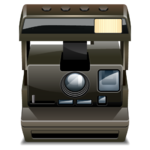

De: La Frikipedia, la enciclopedia extremadamente seria.
De: La Frikipedia, la enciclopedia extremadamente seria. De: La Frikipedia, la enciclopedia extremadamente seria.
|  | Este artículo necesita ser ilustrado. Busca una afoto en nuestro depósito de imágenes o donde sea y ponla, pero que no sea pr0n, que se cabrea el señor del adSense y nos corta el grifo de los dólare. Y sin dólare no hay servidor... |
Este fue un periodo muy cojonudo importante para la história de la humanidad, donde habitaban los humanos después de la muerte de los dinosaurios por un bujero negro que se los tragó, en el que se descubre que existe un bichejo de Dios. Se descubre el fuego... y se descubre el uso práctico de la mujer en esos tiempos. Toda una pérdida de tiempo odiséa científica y judicial.
Después que los dinosaurios anduviesen infelices escuchando a Bon Scott de AC/DC, se quejaron con Chuck Norris para que les dejase poner mierda Reggaetón, pero Chuck como buen Jebi que es, se encabronó y les dió una de sus mejores patadas giratorias. Los Dinosaurianos murieron al instante por canis hijos de p3&4 una bota Texana, pero según crónicas escrítas fue por un tal Dios. No se ha podido corroborar.
Ahora, los monos digievolucionaron a Homosexual Sapiens y fueron creando pequeñas y amorfas comunidades en las cuales se reunian para pelear por decidir quien se follaba a la mejor cavernícola de toda la caverna y comía para quedar como un Fat Bastard. Descubrieron que el Hagua (Elemento de la Tabla Periódica) es consumible pero no supera a la Birra (Otro mejor elemento).
Un huevón cavernícola descubrió el fuego por medio de golpear rocas como un retrasado mental pero se cree que fue porque él tenía una ladilla fastidio increíble que soportaba el pobre.
Un gran científico Paletolitiquense descubrió el uso práctico de la mujer, sin querer introduciendo por un orificio su polla milimétrica pichurrina, además que la cavernícola pedía más y así se creo el Sepso.
Aprendieron a ser sedentarios (Es decir pequeño idiota ignorante, dejar de ser nómadas) construyendo casas hechas de bloques de Lego y después pasaron a construirlas con palos y piedras pero no sirvió, llamaron a Lemmy y este les dijo: "Construyanlas de METAL". Y ahora los ineptos entendieron que este misterioso material servía para: música rompe-oídos-cojones, construir edificaciones menos patéticas propensas a destruirse con un pequeño viento polaco.
Se podría decir que el arte, no existía en esos tiempos o era muy primitivo. El creador del arte paleolítico, llamado Pedro Picapiedra, comienza con la expresión artística después de irse a cagar, agarrar un palo y hundir este en la caca. Al darse cuenta de que era una magnífica obra de arte (o lo que c4r4j# fuera) lo titularon: Popon da Payo.
También eran conocidos por hacer stickboys en las paredes haciendo diversas cosas como cazar, hablar, escuchar; entre otras pero eran pintados con pintura de animal recien hechecita.
Los pobladores de este periodo tienen características muy peculiares. La inexistencia de una higiene presentable o de hecho, de estar aseado y olores característicos como el del PASUCO (Pata, sudor y coco) y a excremento de murciélago.
Bichejos grandes y peludos, muchos pelos cortos y rizados. Posiblemente una sola pu/4 ceja debido a que no existían las depilaciones modernas o almenos afeitadoras.
Aliento putrefácto, desaseo total, comida nauceabunda ente otras...
Comer mocos, tocar la caca en fín toda una porquería y un ataque epiléptico a la gente que todo, pero todo le da asco.
Autor(es):